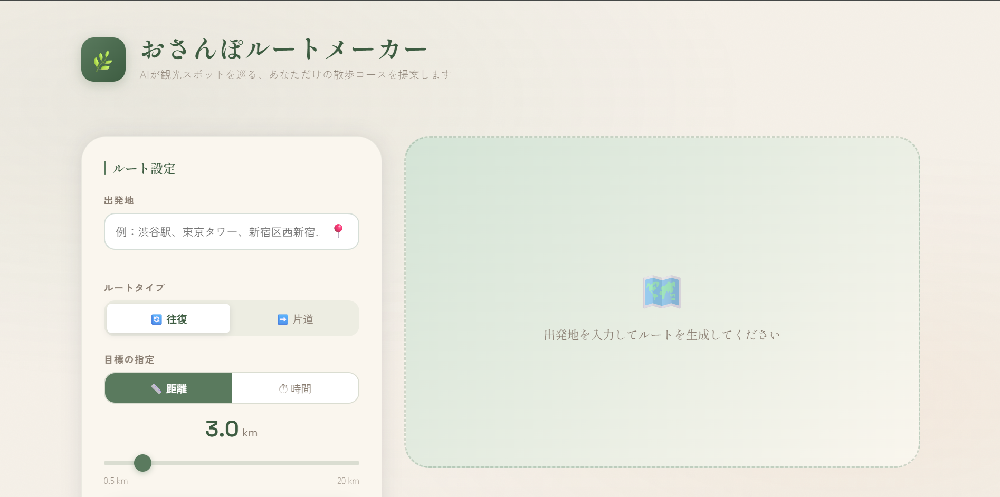

01
Project
KU-BizTech
02
Requirements
追加した条件
- 散歩のルートを決めるアプリを作りたい
- 歩きたい距離もしくは歩きたい時間、現在地（住所か駅名や建物の名前など、もしくはGPS）、往復か片道、を入力することでお散歩ルートを決める
- GoogleMapに連携できるといいな
- 出来れば、観光地などきれいな景色があるところならそこを通るようにルートを作ってほしい
- 海や道のないところを通らず、歩道の上を通るようにして（詳細に）
- きれいなUIでお願い
- Nominatim の日本語住所の解析精度の問題に対応して
- Zipファイルにして
- Chat GPT の API Key を持っている
- Chat GPT を用いてルートの紹介文や住所検索精度を上昇させて
- Chat GPT が入力された距離・時間からルートを考えてもいい（正確な方で）
03
Output
お散歩ルートメーカー

使用動画
▶ 動画を見る →
04
Reflection
感想
今回使ったマップが Nominatim で Google Map とではルートの作り方や精度に差があり、 Nominatim と Google Map では所要時間や実際の距離が変わってしまうため、 実用化を考えると Google Map の API を用いて統一したかった。